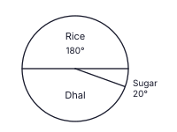
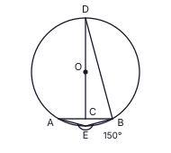
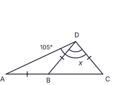
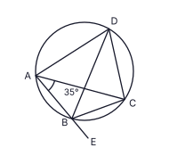
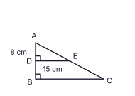
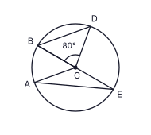
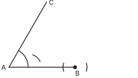

Part A
Answer all questions on this paper itself. Take π = 227 where needed. (2 × 25 = 50 marks)
A hospital ward is to be painted. 12 workers can finish the painting in 20 days. Working at the same rate, how many more workers must be added to finish the painting in 15 days?
In the figure, AB ∥ CD, AÊC = 95° and EĈD = 40°. Find the size of BÂE.

Simplify: 56x + 34x − 12x
Which one of the following quadrilaterals can NOT be a face of a right triangular prism? Mark it with a tick (✓).
(i) a square [ ] (ii) a rectangle [ ] (iii) a parallelogram that is not a rectangle [ ]
The pie chart shows how the packets of rice, sugar and dhal sold in a supermarket in one day are shared. The sector for rice is 180° and the sector for sugar is 20°. 30 packets of sugar were sold. Find the number of packets of dhal sold.

In the figure, O is the centre of the circle and C is the midpoint of the chord AB. DOC is a straight line. If AÊB = 150°, find the size of CD̂B.

Factorise: 7x2 − 28
Given that lg 5.4 = 0.7324, write the value of lg 5400.
AB is a vertical pole in a paddy field. A bird is perched at the top B of the pole and a frog is at the point C on the level ground. BÂC = 90°. In the figure, mark the angle of elevation of B from C as a and the angle of depression of C from B as b, and write the relationship between a and b.

A hospital stores a medicine in cylindrical tins whose height is 7 times the radius. Write the ratio of the area of the label paper needed to cover the curved surface of a tin to the area of its circular base. (Curved surface area of a cylinder = 2πrh)
Two fair tetrahedral dice, each with faces numbered 2, 3, 5 and 6, are rolled together and the number on the bottom face of each die is noted. Find the probability that the sum of the two numbers is 8.
In the figure, ABC is a straight line and AB = BD = DC as marked. If AD̂C = 105°, find the value of x.

The universal set is ξ = {1, 2, 3, ..., 10}. A is the set of multiples of 3 and B is the set of factors of 12. Tick (✓) the correct statement.
(i) A ∩ B = {3} [ ] (ii) A ∪ B = {1, 2, 3, 4, 6, 9} [ ] (iii) n(B′) = 6 [ ]
Simplify: (12a3b × 2ab2) ÷ 8a2b
The second term of a geometric progression is −24 and the third term is −12. Find the fifth term.
In the figure, ABCD is a cyclic quadrilateral. BD bisects AD̂C. AB is produced to E. If BÂC = 35°, find the size of CB̂E.

Find the highest common factor of 9p2q3, 15p3q2 and 21pq4.
A solid right prism whose base is a triangle of area 1386 cm² and a solid right circular cylinder have the same height and the same volume. Find the radius r of the cylinder. (Volume of a cylinder = πr²h)
In triangle ABC, D and E are the midpoints of AB and AC respectively. AD̂E = 90°, AD = 8 cm and DE = 15 cm. Find the perimeter of the quadrilateral BCED.

Find the equation of the straight line passing through the points (2, 4) and (6, 10).
In the figure, O is the centre of the circle and AOBE is a straight line. ABCD is a parallelogram and D lies on the circle. If BĈD = 56°, find the size of DB̂E.

Pavithra invested a sum of money for 2 years at an annual compound interest rate of 8%. The interest she earned in the second year was Rs 432 and the total amount at the end of the 2 years was Rs 5832. Find the sum she invested.
In the figure, C is the centre of the circle and AC ∥ BD. If BĈD = 80°, find the size of AÊB.

Solve the inequality 2x + 9 > 1 and write the negative integer values of x that satisfy it.
In the figure, a circle touches the line AB at B and also touches the line AC. Using the construction lines that are already drawn, complete the construction (with a straight edge and compass) and mark the centre O of the circle.
